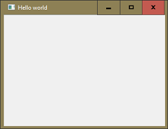
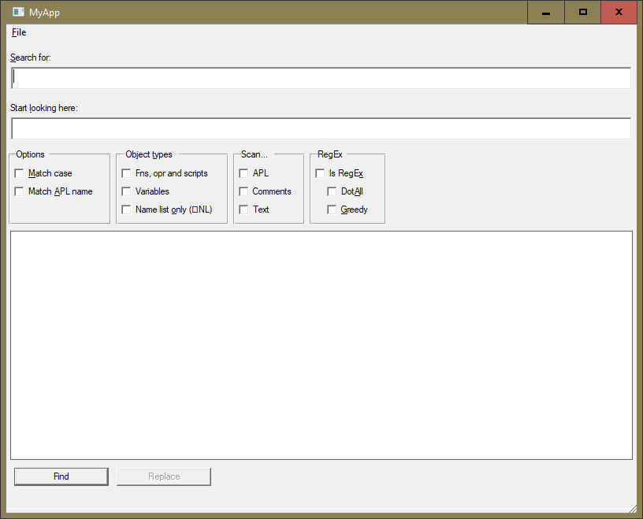

Modern graphical user interfaces (GUI) are a wonder. GUI conventions are so widely known it is now unremarkable for people to start using applications without prior training, expecting the software to make clear what they need to do.
This is a high standard to meet, and writing UIs is a deep art. The primary platforms for professional writers of UIs are currently a combination of HTML 5 and JavaScript (HTML/JS) and Windows Presentation Foundation (WPF). These are rich platforms, which enable effective and attractive UIs to be written.
The high quality of these UIs is particularly important for mass-market software, where users are unskilled and unsupported.
HTML/JS and WPF have a high learning threshold. There is much to be mastered before you can write good UIs on these platforms.
You have an alternative. The GUI tools native to Dyalog support perfectly workmanlike GUIs. They exploit and extend your existing knowledge of Dyalog. If you are producing high-value software for a few users, rather than software for casual use by millions, a native Dyalog GUI might be your best platform.
You can still run your application from within a browser if you wish to: Amazon offers the “AppStream” [1] service allowing exactly that.
⎕NEW came much later than ⎕WC. Is ⎕NEW replacing ⎕WC? Certainly not. It's just an alternative. Both have pros and cons, but after having tried them both in real-world projects we settle for ⎕WC. Here's why:
Pro ⎕NEW:
- Syntax checks are stricter. Yes, that is actually an advantage: problems are detected early.
- It does not need a name.
This point has implications that are not obvious: when you create a GUI control within a class and then try to use it later as parent in another GUI control in a different class you cannot create a reference from the
⎕WCstatement with something like:ref←⍎'MyControlName'parent.⎕wc'Button ('Caption' 'OK')because a name used by
⎕WCis local to the class the⎕WCwas executed in.⎕NEWgets us around this problem.
Pro ⎕WC:
- Every control has its own name, and that name shows in the Event Viewer when debugging a GUI. With
⎕NEWyou see something like[Form].[SubForm].[Group].[Button]which is not exactly helpful. - Can host Microsoft's WebBrowser control, an HTML renderer that can be integrated into your GUI.
We hope that Dyalog will eventually use ⎕DF for the Event Viewer for GUI controls created by ⎕NEW. However, for the time being the disadvantages on ⎕NEW are severe, therefore we settle on ⎕WC.
Creating a GUI form in Dyalog could hardly be simpler:
∆Form←⍎'MyForm'⎕WC 'Form'
∆Form.Caption←'Hello world'
To the form we add controls, set callback functions to run when certain events occur, and invoke the form's Wait method or ⎕DQ to hand control over to the user. See the Dyalog for Microsoft Windows Interface Guide for details and tutorials.
Experience has shown that it is a good idea to keep references to all controls, as well as any variables that belong logically to those controls, within a namespace. Since this is a temporary namespace — it will exist only as long as the application is running — we use an unnamed namespace for this.
We create the controls with names but generate references for them which we assign to the very same names within that unnamed namespace. The concept will become clear when we create an example.
We are going to implement a sample form that looks like this:

Obviously this is a GUI that allows a programmer to search the current workspace.
We would like to emphasise that it is a very good idea to keep the GUI and its code separate from the application. Even if you think that you are absolutely sure that you will never go for a different — or additional — GUI, you should still keep it separate.
Over and over again in real life assumptions such as This app will be used only for a year or two or This app will never use a different type of GUI have proven to be wrong.
Besides, testing the business logic of an application is ar easier when it is separated from the GUI.
Better prepare for it from the start, in particular because it takes little effort to do this early, but becomes a major effort if you need to change or add a GUI later.
In this chapter we will construct the GUI shown above as an example, and we will keep everything unrelated to the GUI in a namespace BusinessLogic.
Our aim is simple: code that is easy to understand and easy to change.
For that we do the following:
- We keep all controls and all data in a single namespace
N; we've already discussed that, now we need to put this into practice. - Define no more than one property at the time when creating a GUI control.
This is not only easier to understand and maintain, it also allows us to skip over certain properties in the Tracer; an obvious example is a line
props,←⊂'Visible' 0; it's easy to imagine why you don't want that to be executed when debugging a GUI application. - We keep short the functions that create the GUI so that each function accomplishes just one task.
While reading this you might think something along the lines of: I've never heard a programmer say she strives for unmaintainable code yet, most GUI code is ugly spaghetti. Stay with us!
We create a top-level namespace that will host our application:
'MyApp' ⎕NS ''We need three subspaces within MyApp:
'GUI'#.MyApp.⎕ns''
'BusinessLogic'#.MyApp.⎕ns''
'GuiUtils'#.MyApp.⎕ns''GUIwill host everything related to the user interfaceBusinessLogicwill host the functions that do the hard work.GuiUtilshosts functions useful for other forms than the main form.
We start with the function Run:
∇ {N}←Run testFlag
[1] ⎕IO←1 ⋄ ⎕ML←1
[2] 'Invalid right argument'⎕SIGNAL 11/⍨~(⊂testFlag)∊0 1
[3] N←Init ⍬
[4] N.∆TestFlag←testFlag
[5] N←CreateGUI N
[6] :If 0=testFlag
[7] N.SearchFor U.DQ N.∆Form
[8] Shutdown N
[9] :EndIf
[10] ⍝Done
∇What this function does:
- Sets system variables.
- Prepares (initialises) the application by calling
Init. - It assigns
testFlagtoN.∆TestFlagso that all GUI callbacks will have access to this; we'll discuss soon how this magic works — it's not becauseNis global. - Creates the GUI by calling
CreateGUI.N.SearchForpoints to the “Search for:” field in the GUI we are about to create. That is going to get the focus.N.∆formpoints to the main form.
- Hands control over to the user by calling
DQ. - Cleans up by calling
Shutdownwhen the user quits.
Notes:
- The function returns a shy result, the namespace
N; this is only needed for test cases. - Neither
U.DQnorShutdownis executed if the right argument is1. We will discuss this later.
Next we introduce the Init function:
∇ N←Init dummy
[1] U←GuiUtils
[2] N←U.CreateNamespace
[3] N.∆Buttons←''
[4] N.∆Labels←N.⎕NS''
[5] N.(∆V_Gap ∆H_Gap)←5 10
[6] N.∆Posn←80 30
[7] N.∆Size←600 800
[8] N.InputFont←'InputFont'⎕WC'Font'('PName' 'APL385 Unicode')('Size' 17)
[9] ⍝Done
∇- It creates a reference
Uwhich points to the namespaceGuiUtils. NoteUis not local toRun; otherwise the test cases — which we will eventually introduce — would have a problem. - It calls a method
CreateNamespaceinGuiUtilswhich returns a namespace which is assigned toN.Watch out: it is this namespace that represents the GUI in the workspace. It will keep references to all controls and variables related to the GUI.
- It creates an empty global variable
∆ButtonsinNwhich we will use to collect references to all push buttons on the GUI when we create them. - It creates an anonymous namespace in
Nwhich is assigned to∆Labels. We will use this to collect references to all labels on the GUI when we create them.The reason: normally we don't handle the labels after creating them, but occasionally we have to. So we separate them from the more important ones. That way they are not in our way but are still available if needed.
- It creates two global variables
∆V_Gapand∆H_GapinN. These are used for the vertical (∆V_Gap) and horizontal (∆H_Gap) distances between controls on our form. - It defines two globals
∆Posnand∆SizeinsideN; they will define the position and the size of the main form. - It creates an instance of the font APL385 Unicode with an appropriate size.
- It has — like most functions in this chapter — a comment line at the end that reads
⍝Done. The simple purpose of this line is to prevent the Tracer from jumping to line 0 after having executed the very last line.
GuiUtils is an ordinary namespace that contains some functions. We will discuss them when we need them.
CreateNamespace is used to create the namespace N:
∇ r←CreateNamespace
[1] r←⎕NS''
[2] r.⎕FX'r←∆List' 'r←{⍵,[1.5]⍎¨⍵}'' ''~¨⍨↓⎕NL 2 9'
[3] ⍝Done
∇This function creates an unnamed namespace and populates it with a function ∆List which returns a matrix with two columns:
| Column | Contains |
|---|---|
| [;1] | Name of a variable or reference |
| [;2] | The value of that name |
After Init runs the N namespace does not yet contain any GUI controls but it does contains some variables that will define certain properties of the GUI:
N.∆List
InputFont #._MyApp.MyApp.GUI.InputFont
∆Buttons
∆H_Gap 10
∆Labels #._MyApp.MyApp.GUI.GuiUtils.[Namespace].[Namespace]
∆Posn 80 30
∆Size 600 800
∆V_Gap 5This function calls all the functions that create controls. They all start their names with Create.
∇ N←CreateGUI N
[1] N←CreateMainForm N
[2] N←CreateSearch N
[3] N←CreateStartLookingHere N
[4] N.∆Groups←⎕NS''
[5] N←CreateOptionsGroup N
[6] N←CreateObjectTypesGroup N
[7] N←CreateScanGroup N
[8] N←CreateRegExGroup N
[9] {⍵.Size←(⌈/1⊃¨⍵.Size),¨1+2⊃¨⍵.Size}'Group'⎕WN N.∆Form
[10] N←CreateList N
[11] N←CreatePushButtons N
[12] N←CreateHiddenButtons N
[13] N.HitList.Size[1]-←(2×N.∆V_Gap)+N.∆Form.Size[1]-N.Find.Posn[1]
[14] N.(⍎¨↓⎕NL 9).onKeyPress←⊂'OnKeyPress'
[15] N.∆WriteToStatusbar←N∘{⍺.Statusbar.StatusField1.Text←⍵ ⋄ 1:r←⍬}
[16] N.∆Form.onConfigure←'OnConfigure'(335,CalculateMinWidth N)
[17] ⍝Done
∇Notes:
- An anonymous namespace is created and assigned to
∆GroupswithinN. We will create all groups within this subspace. - The height of all groups is calculated dynamically in line [9]: it's defined by the size of the tallest group plus 1 pixel.
- The height of the hit list is calculated dynamically in line [13] so that it fits onto the form.
- Line [14] assigns the callback
OnKeyPressto all controls on the form. - Line [15] defines dynamically a function
∆WriteToStatusbarinsideNwithNglued to the function as left argument.With this construct we always have
Nas left argument at our disposal inside∆WriteToStatusbar. - Line [16] assigns a callback
OnConfigureto the Configure event. The callback gets a left argument which is a two-item vector with the constant 335 and a dynamically calculated value for the width.The value is calculated only once, for the assignment. This is necessary: the number of Configure events can be overwhelming.
That callback is very important: without it any Configure event would cause a VALUE ERROR, which in turn would make you lose your workspace because there are just too many of them. So we introduce it straight away; we cannot forget it.
∇ OnConfigure←{⍵[1 2 3 4],(⍺[1]⌈⍵[5]),(⍺[2]⌈⍵[6])}
∇Since the Tracer cannot (currently) step into one line dfns, defining the OnConfigure callback as a one liner is exceedingly useful as it allows you to avoid stepping into the callback, which is itself likely to result in even more configure events being generated. As already mentioned it is absolutely essential that this function is a one-liner because that makes the Tracer ignore this function.
Although we list all functions here you might not necessarily follow us on each of them in detail, but you should at least keep reading until you reach GUI.AdjustGroupSize.
However, we suggest to scan through them rather than skipping them and carrying on with the callback functions.
∇ N←CreateMainForm N;∆
[1] ∆←⊂'Form'
[2] ∆,←⊂'Coord' 'Pixel'
[3] ∆,←⊂'Caption' 'MyApp'
[4] ∆,←⊂'Posn'N.∆Posn
[5] ∆,←⊂'Size'N.∆Size
[6] N.∆Form←⍎'Form'⎕WC ∆
[7] N.∆Form.N←N
[8] N←CreateMenubar N
[9] N←CreateStatusbar N
[10] ⍝Done
∇One statement needs discussion: line [7] assigns N to N.∆Form.N – what for?
This allows us to find N with ease: we know that there is always a reference to N available inside the main form. When we introduce the callback functions we will need N is almost all of them, and this will make is easy for them to find it.
Note that the function collects properties which are assigned to a local variable ∆; we don't attempt to give it a proper name because we use it just for collecting stuff.
Why are we not assigning the properties in one go? Something like this:
N.∆Form←⍎'Form'⎕WC 'Form'('Coord' 'Pixel')('Caption' 'MyApp')('Posn'∆Posn)('Size'∆Size)Are shorter programs not better? They are, but there are exceptions.
Besides being more readable, having just one property on a line has the big advantage of allowing us to skip the line in the Tracer if we wish to. That is particularly pleasant when we don't want something to be executed like ('Visible' 0) or ('Active' 0). If they are part of a lengthy line, well, you get the idea.
We are not using a visual designer to create the GUI; we use APL code. Wherever possible, we calculate position and size dynamically, or assign constants.
The name we use as left argument of ⎕WC is also used within N when we assign the reference that is created with the ⍎ primitive on the (shy) result of ⎕WC. That's what a statement like this does:
N.∆Form←⍎'Form'⎕WC ∆CreateMainForm calls two functions which we introduce next.
∇ N←CreateMenubar N;TAB;∆
[1] TAB←⎕UCS 9
[2] N.∆Menubar←⍎'∆Menubar'N.∆Form.⎕WC⊂'Menubar'
[3] N.∆Menubar.FileMenu←⍎'FileMenu'N.∆Menubar.⎕WC'Menu'('Caption' '&File')
[4] ∆←⊂'MenuItem'
[5] ∆,←⊂'Caption'('Quit',TAB,'Escape')
[6] ∆,←⊂'Accelerator'(27 0)
[7] N.∆Menubar.Quit←⍎'Quit'N.∆Menubar.FileMenu.⎕WC ∆
[8] N.∆Menubar.Quit.onSelect←1
[9] ⍝Done
∇Note that we assign the result of ⍎'∆Menubar'N.∆Form.⎕WC⊂'Menubar' (which is actually the menubar on our form) to ∆Menubar rather than Menubar as you might have expected.
The reason is that we do not assign the “Menu” and “MenuItem” and “Separator” objects to N but to the menubar itself; because it's a static menu we don't want matters to be blurred, so we keep them separate, similar to the labels.
∇ N←CreateStatusbar N;∆
[1] N.Statusbar←⍎'Statusbar'N.∆Form.⎕WC⊂'Statusbar'
[2] ∆←⊂'StatusField'
[3] ∆,←⊂'Coord' 'Prop'
[4] ∆,←⊂'Posn'(0 0)
[5] ∆,←⊂'Size'(⍬ 100)
[6] ∆,←⊂'Attach'('Bottom' 'Left' 'Bottom' 'Right')
[7] N.StatusField1←⍎'StatusField1'N.Statusbar.⎕WC ∆
[8] ⍝Done
∇ ∇ N←CreateSearch N;∆
[1] ∆←⊂'Label'
[2] ∆,←⊂'Posn'N.(∆V_Gap ∆H_Gap)
[3] ∆,←⊂'Caption' '&Search for:'
[4] ∆,←⊂'Attach'('Top' 'Left' 'Top' 'Left')
[5] N.∆Labels.SearchFor←⍎'SearchFor'N.∆Form.⎕WC ∆
[6]
[7] ∆←⊂'Edit'
[8] ∆,←⊂'Posn'((⊃U.AddPosnAndSize N.∆Labels.SearchFor)N.∆H_Gap)
[9] ∆,←⊂'Size'(⍬(N.∆Form.Size[2]-2×N.∆H_Gap))
[10] ∆,←⊂'FontObj'N.InputFont
[11] ∆,←⊂'Attach'('Top' 'Left' 'Top' 'Right')
[12] N.SearchFor←⍎'SearchFor'N.∆Form.⎕WC ∆
[13] ⍝Done
∇This function creates the label Search for and the associated edit field.
Notes:
- The position of the label on the form is defined by the global variables
N.∆V_GapandN.∆H_Gap. - Note that the reference for the label is assigned to the subspace
∆LabelswithinNas discussed earlier. - The position of the Edit control is calculated dynamically from the position and size of the label by the function
GuiUtils.AddPosnAndSizewhich we therefore need to introduce.
∇ AddPosnAndSize←{
[1] +⌿↑⍵.(Posn Size)
[2] }
∇Not much code, but very helpful and used over and over again, so it makes sense to make it a function.
It just makes position and size a matrix and sums up the rows. That is exactly what we need for positioning the Edit control vertically. Its horizontal position is of course defined by N.∆H_Gap.
N←CreateStartLookingHere N;∆
∆←⊂'Label'
∆,←⊂'Posn'((N.∆V_Gap+⊃U.AddPosnAndSize N.SearchFor)N.∆H_Gap)
∆,←⊂'Caption' 'Start &looking here:'
∆,←⊂'Attach'('Top' 'Left' 'Top' 'Left')
N.∆Labels.StartLookingHere←⍎'StartLookingHere'N.∆Form.⎕WC ∆
∆←⊂'Edit'
∆,←⊂'Posn'((⊃U.AddPosnAndSize N.∆Labels.StartLookingHere)N.∆H_Gap)
∆,←⊂'Size'(⍬(N.∆Form.Size[2]-2×N.∆H_Gap))
∆,←⊂'FontObj'N.InputFont
∆,←⊂'Attach'('Top' 'Left' 'Top' 'Right')
N.StartLookingHere←⍎'StartLookingHere'N.∆Form.⎕WC ∆
⍝DoneNote that this time the vertical position of the label is defined by the total of the Posn and Size of the Search for edit control plus N.∆V_Gap.
∇ N←CreateOptionsGroup N;∆
[1] ∆←⊂'Group'
[2] ∆,←⊂'Caption' 'Options'
[3] ∆,←⊂'Posn'((N.∆V_Gap+⊃U.AddPosnAndSize N.StartLookingHere),N.∆H_Gap)
[4] ∆,←⊂'Size'(300 400)
[5] ∆,←⊂'Attach'('Top' 'Left' 'Top' 'Left')
[6] N.∆Groups.OptionsGroup←⍎'OptionsGroup'N.∆Form.⎕WC ∆
[7]
[8] ∆←⊂'Button'
[9] ∆,←⊂'Style' 'Check'
[10] ∆,←⊂'Posn'(3 1×N.(∆V_Gap ∆H_Gap))
[11] ∆,←⊂'Caption' '&Match case'
[12] N.MatchCase←⍎'MatchCase'N.∆Groups.OptionsGroup.⎕WC ∆
[13]
[14] ∆←⊂'Button'
[15] ∆,←⊂'Style' 'Check'
[16] ∆,←⊂'Posn'((⊃U.AddPosnAndSize N.MatchCase),N.∆H_Gap)
[17] ∆,←⊂'Caption' 'Match &APL name'
[18] N.MatchAPLname←⍎'MatchAPLname'N.∆Groups.OptionsGroup.⎕WC ∆
[19]
[20] AdjustGroupSize N.∆Groups.OptionsGroup
[21] ⍝Done
∇The group as such is assigned to OptionsGroup inside N.∆Groups as discussed earlier.
The function calls AdjustGroupSize which we therefore need to introduce.
∇ AdjustGroupSize←{
[1] ⍝ Ensures that the group is just big enough to host all its children
[2] ⍵.Size←N.(∆H_Gap ∆V_Gap)+⊃⌈/{+⌿↑⍵.(Posn Size)}¨⎕WN ⍵
[3] 1:r←⍬
[4] }
∇The comment in line [1] tells it all.
Note that the system function ⎕WN gets a reference as right argument rather than a name; that's important because in that case ⎕WN returns references as well.
∇ N←CreateObjectTypesGroup N;∆
[1] ∆←⊂'Group'
[2] ∆,←⊂'Caption' 'Object &types'
[3] ∆,←⊂'Posn'({⍵.Posn[1],(2×N.∆V_Gap)+2⊃U.AddPosnAndSize ⍵}N.∆Groups.OptionsGroup)
[4] ∆,←⊂'Size'(300 400)
[5] ∆,←⊂'Attach'('Top' 'Left' 'Top' 'Left')
[6] N.∆Groups.ObjectTypes←⍎'ObjectTypes'N.∆Form.⎕WC ∆
[7]
[8] ∆←⊂'Button'
[9] ∆,←⊂'Style' 'Check'
[10] ∆,←⊂'Posn'(3 1×N.(∆V_Gap ∆H_Gap))
[11] ∆,←⊂'Caption' 'Fns, opr and scripts'
[12] N.FnsOprScripts←⍎'FnsOprScripts'N.∆Groups.ObjectTypes.⎕WC ∆
[13]
[14] ∆←⊂'Button'
[15] ∆,←⊂'Style' 'Check'
[16] ∆,←⊂'Posn'((⊃U.AddPosnAndSize N.FnsOprScripts),N.∆H_Gap)
[17] ∆,←⊂'Caption' 'Variables'
[18] N.Variables←⍎'Variables'N.∆Groups.ObjectTypes.⎕WC ∆
[19]
[20] ∆←⊂'Button'
[21] ∆,←⊂'Style' 'Check'
[22] ∆,←⊂'Posn'((⊃U.AddPosnAndSize N.Variables),N.∆H_Gap)
[23] ∆,←⊂'Caption' 'Name list &only (⎕NL)'
[24] N.NameList←⍎'NameList'N.∆Groups.ObjectTypes.⎕WC ∆
[25]
[26] AdjustGroupSize N.∆Groups.ObjectTypes
[27] ⍝Done
∇ ∇ N←CreateScanGroup N;∆
[1] ∆←⊂'Group'
[2] ∆,←⊂'Caption' 'Scan... '
[3] ∆,←⊂'Posn'({⍵.Posn[1],(2×N.∆V_Gap)+2⊃U.AddPosnAndSize ⍵}N.∆Groups.ObjectTypes)
[4] ∆,←⊂'Size'(300 400)
[5] ∆,←⊂'Attach'('Top' 'Left' 'Top' 'Left')
[6] N.∆Groups.ScanGroup←⍎'ScanGroup'N.∆Form.⎕WC ∆
[7]
[8] ∆←⊂'Button'
[9] ∆,←⊂'Style' 'Check'
[10] ∆,←⊂'Posn'(3 1×N.(∆V_Gap ∆H_Gap))
[11] ∆,←⊂'Caption' 'APL'
[12] N.APL←⍎'APL'N.∆Groups.ScanGroup.⎕WC ∆
[13]
[14] ∆←⊂'Button'
[15] ∆,←⊂'Style' 'Check'
[16] ∆,←⊂'Posn'((⊃U.AddPosnAndSize N.APL),N.∆H_Gap)
[17] ∆,←⊂'Caption' 'Comments'
[18] N.Comments←⍎'Comments'N.∆Groups.ScanGroup.⎕WC ∆
[19]
[20] ∆←⊂'Button'
[21] ∆,←⊂'Style' 'Check'
[22] ∆,←⊂'Posn'((⊃U.AddPosnAndSize N.Comments),N.∆H_Gap)
[23] ∆,←⊂'Caption' 'Text'
[24] N.Text←⍎'Text'N.∆Groups.ScanGroup.⎕WC ∆
[25]
[26] AdjustGroupSize N.∆Groups.ScanGroup
[27] ⍝Done
∇ ∇ N←CreateRegExGroup N;∆
[1] ∆←⊂'Group'
[2] ∆,←⊂'Caption' 'RegEx'
[3] ∆,←⊂'Posn'({⍵.Posn[1],N.∆V_Gap+2⊃U.AddPosnAndSize ⍵}N.∆Groups.ScanGroup)
[4] ∆,←⊂'Size'(300 400)
[5] ∆,←⊂'Attach'('Top' 'Left' 'Top' 'Left')
[6] N.∆RegEx←⍎'ObjectTypes'N.∆Form.⎕WC ∆
[7]
[8] ∆←⊂'Button'
[9] ∆,←⊂'Style' 'Check'
[10] ∆,←⊂'Posn'(2 1×N.(∆V_Gap ∆H_Gap))
[11] ∆,←⊂'Caption' 'Is RegE&x'
[12] N.IsRegEx←⍎'IsRegEx'N.∆RegEx.⎕WC ∆
[13] N.IsRegEx.onSelect←'OnToggleIsRegEx'
[14]
[15] ∆←⊂'Button'
[16] ∆,←⊂'Style' 'Check'
[17] ∆,←⊂'Posn'((⊃U.AddPosnAndSize N.IsRegEx),4×N.∆H_Gap)
[18] ∆,←⊂'Caption' 'Dot&All'
[19] N.DotAll←⍎'DotAll'N.∆RegEx.⎕WC ∆
[20]
[21] ∆←⊂'Button'
[22] ∆,←⊂'Style' 'Check'
[23] ∆,←⊂'Posn'((⊃U.AddPosnAndSize N.DotAll),4×N.∆H_Gap)
[24] ∆,←⊂'Caption' '&Greedy'
[25] N.Greedy←⍎'Greedy'N.∆RegEx.⎕WC ∆
[26]
[27] AdjustGroupSize N.∆RegEx
[28] ⍝Done
∇This function ensures both DotAll and Greedy are indented, to emphasise they are available only when the Is RegEx check box is ticked.
The callback OnToggleRegEx will toggle the Active property of these two check boxes accordingly.
∇ N←CreateList N;∆;h
[1] ∆←⊂'ListView'
[2] h←⊃N.∆V_Gap+U.AddPosnAndSize N.MatchCase.##
[3] ∆,←⊂'Posn'(h,N.∆H_Gap)
[4] ∆,←⊂'Size'((N.∆Form.Size[1]-h),N.∆Form.Size[2]-N.∆H_Gap×2)
[5] ∆,←⊂'ColTitles'('Name' 'Location' 'Type' '⎕NS' 'Hits')
[6] ∆,←⊂'Attach'('Top' 'Left' 'Bottom' 'Right')
[7] N.HitList←⍎'HitList'N.∆Form.⎕WC ∆
[8] ⍝Done
∇ ∇ N←CreatePushButtons N;∆
[1] N.∆Buttons←''
[2] ∆←⊂'Button'
[3] ∆,←⊂'Caption' 'Find'
[4] ∆,←⊂'Size'(⍬ 120)
[5] ∆,←⊂'Default' 1
[6] ∆,←⊂'Attach'(4⍴'Bottom' 'Left')
[7] N.∆Buttons,←N.Find←⍎'Find'N.∆Form.⎕WC ∆
[8] N.Find.Posn←(N.∆Form.Size[1]-N.Find.Size[1]+N.Statusbar.Size[1]+N.∆V_Gap),N.∆V_Gap
[9] N.Find.onSelect←'OnFind'
[10]
[11] ∆←⊂'Button'
[12] ∆,←⊂'Caption' 'Replace'
[13] ∆,←⊂'Size'(⍬ 120)
[14] ∆,←⊂'Active' 0
[15] ∆,←⊂'Attach'(4⍴'Bottom' 'Left')
[16] N.∆Buttons,←N.Replace←⍎'Replace'N.∆Form.⎕WC ∆
[17] N.Replace.Posn←(N.Find.Posn[1]),N.∆V_Gap+2⊃U.AddPosnAndSize N.Find
[18] ⍝Done
∇Note that the Find button gets a callback OnFind assigned to the Select event. That's the real work horse.
On callbacks
Rather than doing all the hard work in the callback we could have assigned a 1 to N.Find.onSelect (so that clicking the button quits ⎕DQ or Wait) and doing the hard work after that. At first glance there seems to be little difference between the two approaches.
However, if you want to test your GUI automatically then you must execute the 'business logic' in a callback and avoid calling ⎕DQ or Wait altogether.
That's the reason why our Run function expects a Boolean right argument, and that it's named testFlag. If it's a 1 then MyApp is running in test mode, and neither U.DQ nor Shutdown — which would close down the GUI — are executed.
That allows us in test mode to…
- call
Run - populate the Search for and Start looking here fields
- “click” the Find button programmatically
- populate the “Search for” and “Start looking here” fields
- “click” the “Find” button programmatically
- check the contents of
N.HitList
∇ N←CreateHiddenButtons N;∆
[1] ∆←⊂'Button'
[2] ∆,←⊂'Caption' 'Resize (F12)'
[3] ∆,←⊂'Size'(0 0)
[4] ∆,←⊂'Posn'(¯5 ¯5)
[5] ∆,←⊂'Attach'(4⍴'Top' 'Left')
[6] ∆,←⊂'Accelerator'(123 0)
[7] N.Resize←⍎'Resize'N.∆Form.⎕WC ∆
[8] N.Resize.onSelect←'OnResize'
[9] ⍝Done
∇Note that this button has no size ((0 0)) and is positioned outside the GUI. That means it is invisible to the user, and she cannot click it as a result of that. What's the purpose of such a button?
Well, it has an accelerator key attached to it which, according to the caption, is F12. This is an easy and straightforward way to implement a PF-key without overloading any “onKeyPress” callback.
It also makes it easy to disable F12: just execute N.Resize.Active←0.
We introduce this function here because almost all callbacks — which we will introduce next — will call GetRef2n.
Earlier on we saw that a reference to N was assigned to N.∆form.N. Now all callbacks, by definition, get a reference pointing to the control the callback is associated with as the first element of its right argument.
We also know that the control is owned by the main form, either directly, like Search for, or indirectly like the DotAll checkbox which is owned by the RegEx group, which in turn is owned by the main form.
That means that in order to find N we just need to check whether it exists at the current level. If not we go up one level (with .##) and try again.
GetRef2n is doing just that with a recursive call to itself until it finds N:
∇ GetRef2n←{
[1] 9=⍵.⎕NC'N':⍵.N
[2] ⍵≡⍵.##:'' ⍝ Can happen in context menus, for example
[3] ∇ ⍵.##
[4] }
∇Of course this means that you should not use the name N — or whatever name you prefer instead for this namespace — anywhere in the hierarchy.
Note that line [2] is an insurance against GetRef2n being called inside a callback that is associated with a control that is not owned by the main form. Of course that should not happen – because it makes no sense – but if you do it by accident then without that line the function would call itself recursively forever.
∇ OnKeyPress←{
[1] (obj key)←⍵[1 3]
[2] N←U.GetRef2n obj
[3] _←N.∆WriteToStatusbar''
[4] 'EP'≢key:1 ⍝ Not Escape? Done!
[5] _←2 ⎕NQ N.∆Form'Close' ⍝ Close the main form...
[6] 0 ⍝ ... and suppress the <esacape> key.
[7] }
∇This function just handles the Esc key.
∇ OnToggleIsRegEx←{
[1] N←U.GetRef2n⊃⍵
[2] N.(DotAll Greedy).Active←~N.IsRegEx.State
[3] ⍬
[4] }
∇This callback toggles the Active property of both DotAll and Greedy so that they are active only when the content of Search for is to be interpreted as a regular expression.
∇ OnResize←{
[1] N←⎕NS''
[2] list←CollectControls(⊃⍵).##
[3] N.∆Form←(⊃⍵).##
[4] width←CalculateMinWidth N.∆Form.N
[5] ⎕NQ N.∆Form,(⊂'Configure'),N.∆Form.Posn,(N.∆Form.Size[1]),width
[6] }
∇This function makes sure that the width of the GUI is reduced to the minimum required to display all groups properly.
∇ r←OnFind msg;N
[1] r←0
[2] N←U.GetRef2n⊃msg
[3] N.∆WriteToStatusbar''
[4] :If 0∊⍴N.SearchFor.Text
[5] Dialogs.ShowMsg N'"Search for" is empty - nothing to look for...'
[6] :ElseIf 0∊⍴N.StartLookingHere.Text
[7] Dialogs.ShowMsg N'"Start looking here" is empty?!'
[8] :ElseIf 9≠⎕NC N.StartLookingHere.Text
[9] :AndIf (,'#')≢,N.StartLookingHere.Text
[10] Dialogs.ShowMsg N'Contents of "Start looking here" is not a namespace'
[11] :Else
[12] Find N
[13] :EndIf
[14] ⍝Done
∇The callback performs some checks and either puts an error message on display by calling a function Dialogs.ShowMsg or executes the Find function, providing N as the right argument.
Note that Dialog.ShowMsg follows exactly the same principles we have outlines in this chapter, so we do not discuss it in detail, but you can download the code and look at it if you want to.
One thing should be pointed out however: the form created by Dialog.ShowMsg is actually a child of our main form.
That gets us around a nasty problem: when it's not a child of the main form and you give the focus to another application which then hides completely the form created by Dialog.ShowMsg but not all of the main form, then a click on the main form should bring the application to the front, with the focus on Dialogs.ShowMsg, but that doesn’t happen by default.
By making it a child of the main form we enforce this behaviour. We don't want the user to believe the application has stopped working just because the form is hidden by another application window.
This is the real work horse:
∇ Find←{
[1] N←⍵
[2] G←CollectData N
[3] was←N.∆Buttons.Active
[4] N.∆Buttons.Active←0
[5] _←N.∆WriteToStatusbar'Searching...'
[6] N.∆Result←(noOfHits noOfObjects cpuTime)←##.BusinessLogic.Find G
[7] N.∆Buttons.Active←was
[8] txt←(⍕noOfHits),' hits in ',(⍕noOfObjects),' objects. Search time ',(⍕cpuTime),' seconds.'
[9] _←N.∆WriteToStatusbar txt
[10] 1:r←⍬
[11] }
∇An important thing to discuss is the function CollectData. We want our 'business logic' to be independent from the GUI. So we don't want anything in ##.BusinessLogic to access the N namespace.
But it needs access to the data entered and decisions made by the user on the GUI. So we collect all the data and assign them to variables inside a newly created anonymous namespace, which we assign to G.
∇ CollectData←{
[1] N←⍵
[2] G←⎕NS''
[3] _←G.⎕FX'r←∆List' 'r←{⍵,[1.5]⍎¨⍵}'' ''~¨⍨↓⎕NL 2'
[4] G.APL←N.APL.State
[5] G.Comments←N.Comments.State
[6] G.DotAll←N.DotAll.State
[7] G.FnsOprScripts←N.FnsOprScripts.State
[8] G.Greedy←N.Greedy.State
[9] G.IsRegEx←N.Greedy.State
[10] G.MatchAPLname←N.MatchAPLname.State
[11] G.MatchCase←N.MatchCase.State
[12] G.NameList←N.NameList.State
[13] G.SearchFor←N.SearchFor.Text
[14] G.StartLookingHere←N.StartLookingHere.Text
[15] G.Text←N.Text.State
[16] G.Variables←N.Variables.State
[17] G
[18] }
∇This namespace (G) is passed as the only argument to the Find function.
Suppose you replaces the Windows native GUI by an HTML5/JavaScript GUI. All you have to do here is ensure the G namespace is fed with all the data needed. ##.BusinessLogic will not be affected in any way.
Of course nothing is really happening in ##.BusinessLogic.Find, we just mock something up:
∇ (noOfHits noOfObjects cpuTime)←Find G;was
[1] ⍝ Here's where all the searching takes place.
[2] ⍝ `G` is a namespace that contains all the relevant GUI control settings (check boxes
[3] ⍝ and text fields) as ordinary field. It's the interface between GUI and application.
[4] ⎕DL 3
[5] noOfHits←123
[6] noOfObjects←645
[7] cpuTime←2.3
∇ ∇ CalculateMinWidth←{
[1] N←⍵
[2] ignore←'HitList' 'SearchFor' 'StartLookingHere' 'Statusbar' 'StatusField1' '∆Form'
[3] list2←N.{⍎¨(' '~¨⍨↓⎕NL 9)~⍵}ignore
[4] (2×N.∆V_Gap)+⌈/{0::0 0 ⋄ 2⊃+⌿↑⍵.(Posn Size)}¨list2
[5] }
∇The function calculates the minimum width needed by the form to be presentable. It takes all controls owned by the form into account except those listed on ignore.
∇ CollectControls←{
[1] 0∊⍴l←⎕WN ⍵:⍬
[2] l,(⊃,/∇¨l)~⍬
[3] }
∇It collects all controls found in ⍵ and then calls itself on them until nothing is found anymore.
∇ {r}←{focus}DQ ref
[1] focus←{0<⎕NC ⍵:⍎⍵ ⋄ ref}'focus'
[2] ⎕NQ focus'GotFocus' ⋄ r←⎕DQ ref
[3] ⍝Done
∇The function accepts an optional left argument which, when specified, must be a reference pointing to a control. The function then forces the focus onto that control before executing ⎕DQ on the right argument, usually the main form.
We put this into a separate function so that we can at any time interrupt the function, investigate variables or change functions and then carry on by executing →1.
∇ {r}←Shutdown N
[1] r←⍬
[2] :Trap 6 ⋄ 2 ⎕NQ N.∆Form'Close' ⋄ :EndTrap
∇This function ensures the main form is closed in case it still exists.
Note that we need the trap. Even checking the main form with ⎕NS might fail if the user clicks the Close box right after the check has been performed but before the next line is executed.
This would produce one of these nasty crashes that occur only every odd year and are not reproducible. This is one of the rare cases where a trap is better than any check.
To demonstrate the power of the above approach we have to show it is easy to change.
Let's suppose the following:
- We have a user who is unhappy with the arrangement of the controls on the GUI. On her huge 5k monitor it looks a bit clumsy.
- She also wants the groups arranged in two rows, with Options and RegEx in the first row and Object types and Scan… in the second row.
How much work is required to make these changes?
First we double the vertical and horizontal distance between the controls on the main form:
∇ N←Init dummy
...
[4] N.∆Labels←N.⎕NS''
[5] N.(∆V_Gap ∆H_Gap)←10 20
[6] N.∆Posn←80 30
...
∇Then we change the sequence in which the groups are created:
leanpub-start-insert
∇ N←CreateGUI N;groups
[1] N←CreateMainForm N
[2] N←CreateSearch N
[3] N←CreateStartLookingHere N
[4] N.∆Groups←⎕NS''
[5] N←CreateOptionsGroup N
[6] N←CreateRegExGroup N
[7] groups←'Group'⎕WN N.∆Form
[8] {⍵.Size←(⌈/1⊃¨⍵.Size),¨1+2⊃¨⍵.Size}groups
[9] N←CreateObjectTypesGroup N
[10] N←CreateScanGroup N
[11] {⍵.Size←(⌈/1⊃¨⍵.Size),¨1+2⊃¨⍵.Size}('Group'⎕WN N.∆Form)~groups
[12] N←CreateList N
[13] N←CreatePushButtons N
[14] N←CreateHiddenButtons N
[15] N.HitList.Size[1]-←(2×N.∆V_Gap)+N.∆Form.Size[1]-N.Find.Posn[1]
[16] N.(⍎¨↓⎕NL 9).onKeyPress←⊂'OnKeyPress'
[17] N.∆WriteToStatusbar←N∘{⍺.Statusbar.StatusField1.Text←⍵ ⋄ 1:r←⍬}
[18] N.∆Form.onConfigure←'OnConfigure'(335,CalculateMinWidth N)
[19] ⍝Done
∇We need to calculate the height of the groups here twice: once in line [8], after having created the first two groups and then again in line [11] on all groups but the first two. For that we save the references of the first two on groups and exclude them in line 11.
We then tell the RegEx group where it should go, and we adjust the positions of the DotAll and the Greedy check boxes:
∇ N←CreateRegExGroup N;∆
[1] ∆←⊂'Group'
[2] ∆,←⊂'Caption' 'RegEx'
[3] ⍝∆,←⊂'Posn'({⍵.Posn[1],(2×N.∆V_Gap)+2⊃U.AddPosnAndSize ⍵}N.∆Groups.ScanGroup)
[4] ∆,←⊂'Posn'({⍵.Posn[1],(2×N.∆V_Gap)+2⊃U.AddPosnAndSize ⍵}N.∆Groups.OptionsGroup)
[5] ∆,←⊂'Size'(300 400)
...
[16] ∆←⊂'Button'
[17] ∆,←⊂'Style' 'Check'
[18] ⍝∆,←⊂'Posn'((⊃U.AddPosnAndSize N.IsRegEx),4×N.∆H_Gap)
[19] ∆,←⊂'Posn'((⊃U.AddPosnAndSize N.IsRegEx),2×N.∆H_Gap)
[20] ∆,←⊂'Caption' 'Dot&All'
...
[24] ∆,←⊂'Style' 'Check'
[25] ⍝∆,←⊂'Posn'((⊃U.AddPosnAndSize N.DotAll),4×N.∆H_Gap)
[26] ∆,←⊂'Posn'((⊃U.AddPosnAndSize N.DotAll),2×N.∆H_Gap)
[27] ∆,←⊂'Caption' '&Greedy'
...
∇We keep the old version to make a comparison easy.

Keeping old versions of lines
We do not generally advocate the technique used here. We do this only for demonstration.
In a real-world scenario, rather than cluttering the code, it should be left to a source-code management system and proper comparison tools to handle such issues.
For CreateObjectTypesGroup we just need to change the Posn property:
∇ N←CreateObjectTypesGroup N;∆
[1] ∆←⊂'Group'
[2] ∆,←⊂'Caption' 'Object &types'
[3] ⍝∆,←⊂'Posn'({⍵.Posn[1],(2×N.∆V_Gap)+2⊃U.AddPosnAndSize ⍵}N.∆Groups.OptionsGroup)
[4] ∆,←⊂'Posn'((N.∆V_Gap+1⊃U.AddPosnAndSize N.∆Groups.OptionsGroup),N.∆H_Gap)
[5] ∆,←⊂'Size'(300 400)
...
∇The last group-related function, CreateScanGroup, does not change at all because it still makes itself a neighbour of CreateObjectTypesGroup.
Since we now have significantly less space available for the HitList we need to change CreateList as well:
∇ N←CreateList N;∆;h
[1] ∆←⊂'ListView'
[2] ⍝h←⊃N.∆V_Gap+U.AddPosnAndSize N.MatchCase.##
[3] h←⊃N.∆V_Gap+U.AddPosnAndSize N.FnsOprScripts.##
[4] ∆,←⊂'Posn'(h,N.∆H_Gap)
...
∇And that was it.
For implementing tests execute the following steps:
- Create a namespace with
'TestCases'#._Meddy.⎕ns'' - Load the script
APLTreeUtilsand the classTestersinto#as discusses in the chapter regarding tests chapter. - Execute these statements:
)cs #._MyApp.TestCases #.Tester.EstablishHelpersIn ⍬
Edit #._MyApp.TestCases.Test_000 and make it look like this:
∇ R←Test_01(stopFlag batchFlag);⎕TRAP;N
[1] ⍝ Test that the GUI comes up and the "Find" works well
[2] ⎕TRAP←(999 'C' '. ⍝ Deliberate error')(0 'N')
[3] R←∆Failed
[4]
[5] N←##.MyApp.GUI.Run 1
[6] N.SearchFor.Text←'⎕IO'
[7] N.StartLookingHere.Text←'#'
[8] 1 ⎕NQ N.Find'Select'
[9] →GoToTidyUp 123 645 2.3≢N.∆Result
[10] R←∆OK
[11]
[12] ∆TidyUp:
[13] 1 ⎕NQ N.∆Form'Close'
∇Of course this is not how a real test would look (line [9]) but it demonstrates the principles.
Note that N.∆Result was set in the GUI.Find function.
After having executed Init there is a global reference GUI.U around that points to the namespace GUI.GuiUtils; that's necessary because otherwise later calls might well fail with a VALUE ERROR when GUI.U is not available.
That's not a problem because we don't save the workspace, we recompile it from scratch whenever we start a development session.
Take a copy of the first test and make it look like this:
∇ R←Test_02(stopFlag batchFlag);⎕TRAP;N;G
[1] ⍝ Test the business logic
[2] ⎕TRAP←(999 'C' '. ⍝ Deliberate error')(0 'N')
[3] R←∆Failed
[4]
[5] N←##.MyApp.GUI.Run 1
[6] N.SearchFor.Text←'⎕IO'
[7] N.StartLookingHere.Text←'#'
[8] G←##.MyApp.GUI.CollectData N
[9] →GoToTidyUp 123 645 2.3≢##.MyApp.BusinessLogic.Find G
[10] R←∆OK
[11]
[12] ∆TidyUp:
[13] 1 ⎕NQ N.∆Form'Close'
∇Take a copy of the first test and make it look like this:
∇ R←Test_03(stopFlag batchFlag);⎕TRAP;N
[1] ⍝ Test whether an empty "Search for" field leads to an error message.
[2] ⎕TRAP←(999 'C' '. ⍝ Deliberate error')(0 'N')
[3] R←∆Failed
[4]
[5] N←##.MyApp.GUI.Run 1
[6] N.StartLookingHere.Text←'#'
[7] 1 ⎕NQ N.Find'Select'
[8] →GoToTidyUp 0=N.⎕NC'∆ErrorMsg'
[9] →GoToTidyUp'"Search for" is empty - nothing to look for...'≢N.∆ErrorMsg
[10] R←∆OK
[11]
[12] ∆TidyUp:
[13] 1 ⎕NQ N.∆Form'Close'
∇This works because when testFlag – the right argument of GUI.Run — is 1 then the function Dialog.ShowMsg does nothing but set a global variable N.∆ErrorMsg which we use in the test case in order to check whether our actions triggered the correct behaviour.
We have eariler stated that we won't discuss Dialogs.ShowMsg in details but we list it here because the function illustrates an important concept of how GUIs can be tested at all:
∇ {r}←{caption}ShowMsg(N msg);n2;U
[1] ⍝ Takes `N` and a message to be displayed as mandatory right arguments.
[2] ⍝ Takes an optional `caption` as left argument.
[3] ⍝ Returns 1 when running under test conditions and 0 otherwise.
[4] ⍝ In test mode no GUI is created at all but a global `N.∆ErrorMsg` is set to `msg`.
[5] r←0
[6] caption←{0<⎕NC ⍵:⍎⍵ ⋄ 'Attention!'}'caption'
[7] :If N.∆TestFlag
[8] N.∆ErrorMsg←msg
[9] r←1
[10] :Else
[11] U←##.GuiUtils
[12] n2←U.CreateNamespace
[13] n2.(∆V_Gap ∆H_Gap)←N.(∆V_Gap ∆H_Gap)
[14] n2←n2 CreateGUI N msg caption
[15] {}n2.OK U.DQ n2.∆Form
[16] Close n2.∆Form
[17] :EndIf
∇Now it becomes apparent why we assigned the right argument of GUI.Run — testFlag — to N.∆TestFlag: we need this potentially in order to avoid handing over control to the user; in test cases we don't want to do this.
- Delete
#._MyApp.TestCases.Test_0001 - Run
#._MyApp.TestCases.RunDebug 0.
GUIs tend to change quite a lot over time, and rewriting — or adding — plenty of test cases can take a significant amount of time, sometimes far more than needed to implement the GUI in the first place.
In such cases the time invested in exhaustive test cases might be too high.
On the other hand if the application's main purposes is to make complex tasks manageable, there will be a lot of dependencies and checking going on in the background. In that case exhaustive test cases might well be a good investment if only because you will find bugs for sure. Your call.
We believe we have demonstrated the combination of techniques outlined in this chapter leads not only to better code but makes it also far easier actually to write GUI applications in the first place.
Having said this, the approach outlined here is insufficient if the GUI of an application changes heavily depending on the user's actions.
However, the principal ideas can still be used but the list of controls were better compiled from scratch at the start of each callback function rather than having them as a static list in a namespace.
It was Paul Mansour came up with many of the ideas outlined here. We stole plenty from him and owe him a big thank you.